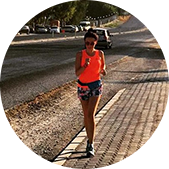

Не знала, что себе купить - обратилась к ребятам из RunSmart -
подобрали пульсометр, который подошёл именно под мои цели и
финансовые возможности. Через некоторое время решила обновить
гаджет - не раздумывая обратилась туда же.
Новые цели - новый гаджет!
Спасибо, RunSmart!
Иван Сёмочкин
1 полумарафон
Крутая штука-пульсометр. Обычно без них бегал. Оказывается только
хуже себе делал. Купил пульсометр, ещё в подарок получил
тренировку. Со мной вместе провели первую тренировку, научили
пользоваться новым гаджетом. Также объяснили основы анатомии,
составили план тренировок на месяц вперёд.
С ними подготовился к своему первому полумарафону! Спасибо!!!

Юлия Дашкина
2 полумарафона
Долго не могла начать бегать, т.к. до этого несколько раз
начинала, но становилось тяжело и я бросала. От друзей услышала о
RunSmart и о беге с контролем пульса и решила попробовать.
Позвонила, ребята поинтересовались моими целями и подобрали очень
интересный вариант со скидкой! Теперь бегаю и наслаждаюсь бегом!
Пробежала уже 2 полумарафона и несколько более коротких забегов и
не намерена останавливаться!